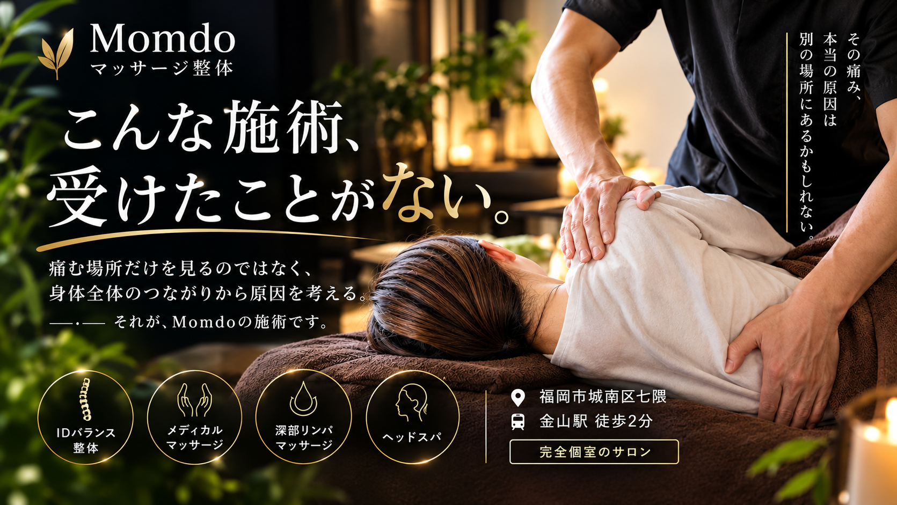

ダブルモーションテクニック
身体の動きや関節の連動に目を向けながら行う手技です。内容はお身体の状態を確認してご案内します。
Medical Massage
つらさや身体の動かしにくさについてお話を伺い、お一人おひとりの状態に合わせて施術内容をご相談します。

「気になるところをほぐしてほしい」「身体の動かしにくさも相談したい」など、ご希望は人それぞれです。
Momdoのメディカルマッサージでは、まずお話を伺い、気になる箇所だけでなく、筋肉・関節や身体の動きのつながりにも目を向けて施術内容を相談します。
決まった手順を一律に行うのではなく、その日の状態やご希望を確認しながら、施術する範囲や力加減を調整します。
リラクゼーションを目的としたコースとの違いや、どのコースが合うか迷われる場合も、事前にお気軽にご相談ください。
気になる部分だけでなく、身体の状態や動き方を確認しながら、無理のない範囲で施術を行います。
手技を中心に、必要に応じて機器なども用い、施術内容は事前にご説明します。
状態やご希望に応じて、以下の手技・機器を取り入れる場合があります。すべての施術で一律に使用するものではありません。
身体の動きや関節の連動に目を向けながら行う手技です。内容はお身体の状態を確認してご案内します。
頭部や身体の状態を確認しながら行う手技です。適応や施術内容については事前にご相談ください。
必要に応じて使用する機器の一つです。使用の可否は状態を確認したうえでご案内します。
専用の道具を用いる手技です。ご希望や状態を伺い、使用する場合は内容をご説明します。
筋膜へのアプローチに用いる器具です。状態に合わせて使用を検討します。
ご希望と当日の状態を伺い、施術する範囲や時間配分を相談しながら組み立てます。